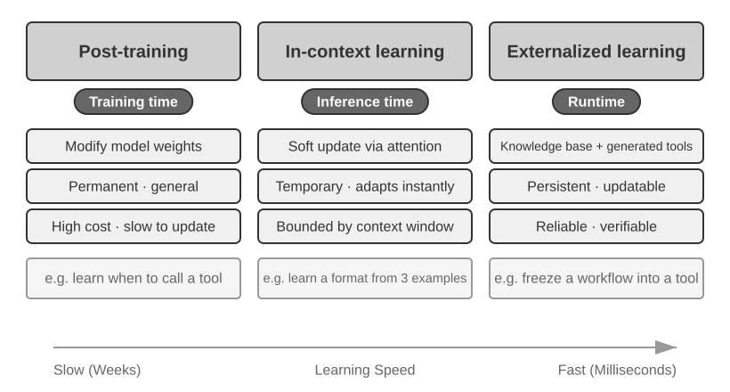
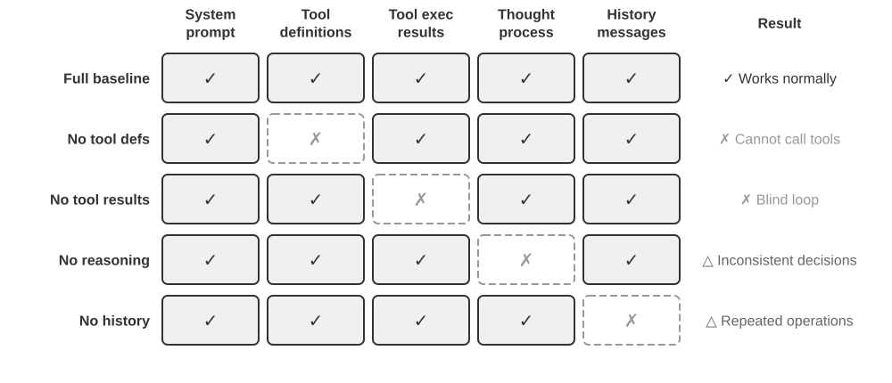
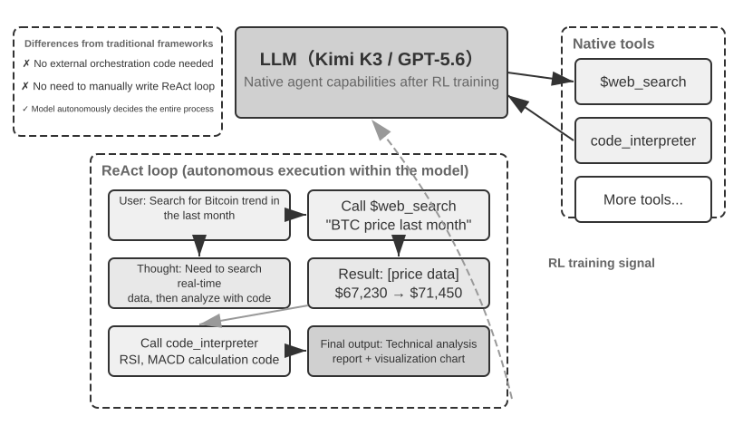
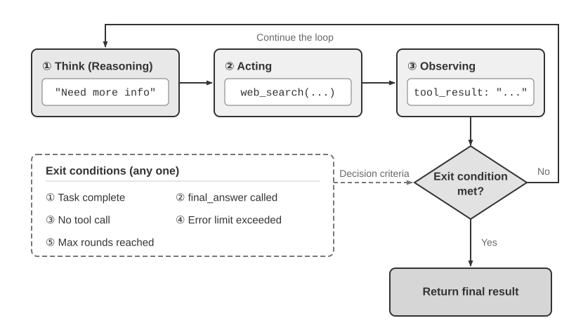

Getting Started with AI Agents¶
If you have used Cursor to write code and watched it search your codebase, edit multiple files, and rerun tests until they pass, you have already used an AI Agent. The same is true if you have used Deep Research to investigate a topic through repeated searching and reading, had Manus control a browser to finish online tasks, asked the Doubao phone assistant to book tickets or send messages, or sent Pine AI to negotiate a lower telecom bill.
These products take many forms, but they share a common trait: they are no longer passive "you ask, it answers" conversations. They plan their own execution steps, call the tools each task requires, and adjust their strategy as results come in. AI Agents are becoming a new way to interact with computers.
This chapter begins with practical examples and works back toward the core components of an AI Agent: readers will experience firsthand what modern Agents can do, understand the architecture behind them, and learn the design patterns and best practices for building Agent systems.
Reading Tip: This chapter is the conceptual map for the whole book: a concise tour of the core formula, operating loop, engineering framework, and Agent design patterns. It establishes the shared vocabulary and reference points used throughout later chapters. Do not try to memorize every concept on your first read; aim for the big picture. Each later chapter expands on one aspect introduced here, and you can return to this chapter whenever you need to reorient.
Modern Agent = LLM + Context + Tools¶
The essence of a modern Agent system fits into one concise formula: Agent = LLM (Large Language Model) + Context + Tools. The formula is simple and practical—provided each term is read broadly:
- The LLM is the Agent's reasoning engine: It is more than a set of model parameters; it is the Agent's decision-making core, responsible for understanding intent, reasoning, planning, and judgment. An LLM's capabilities come from world knowledge and language ability acquired during pre-training, plus decision-making strategies encoded through post-training (techniques such as supervised fine-tuning and reinforcement learning are covered in Chapter 7).
- Context is the Agent's working set of information: Not just the text fed into the model, but the working set of information available to the Agent at each decision point—the environment, user memory, domain knowledge, its own state, and task progress. Just as a person making a decision needs to size up the situation, recall relevant experience, and consult references, the Agent's context window contains the information it can use at that moment.
- Tools are the Agent's action interfaces: Not a handful of callable API functions, but the full set of ways the Agent can act—from predefined tool calls to Skills loaded on demand, from generating code to create new capabilities on the fly to delegating work to sub-agents, from reaching out to the user to responding to external events.
Put more intuitively: Agent = Reasoning Engine + Working Context + Action Interfaces. The model reasons and decides, the context provides the working set of information those decisions depend on, and the tools provide the interfaces through which decisions affect the outside world.
These three components correspond exactly to three core concepts in RL (see Chapter 7). The following table is optional reading—if you do not have an RL background, feel free to skip it; nothing later depends on it. It exists only to help readers who do know RL map that knowledge onto this book's terminology:
| Intuition | Agent Component | RL Concept (Optional) | Role |
|---|---|---|---|
| Reasoning Engine | LLM | Policy | The decision-making logic that determines "what to do next"—given the current information, choose the most appropriate action from all available options |
| Working Context | Context | Observation Space | All the information available to the Agent—what it can observe, read, remember, and which systems it can access |
| Action Interfaces | Tools | Action Space | The complete set of things the Agent can do—what "means" are available, from sending messages to executing code to controlling interfaces |
Observation and Action Spaces: The Interface Between Model and World¶
In their classic textbook Computer Architecture: A Quantitative Approach, Hennessy and Patterson open Chapter 1 by asking, “What Is Computer Architecture?” and identify the instruction set architecture (ISA) as the interface between software and hardware1. This perspective gives us a useful way to understand Agents: the observation space and action space together form the interface between the LLM and its external environment. The observation space translates information in the environment into context the model can process; the action space translates model decisions into operations on the outside world. Information outside the observation space effectively does not exist for the model. An operation outside the action space remains something the model can only recommend in words, even if it knows exactly what should be done.
Consequently, once the underlying model is held constant, the primary systems-engineering lever for improving Agent performance is often to redefine or expand its observation and action spaces. In this book's terminology, that means expanding context and tools. Many problems that appear to require a “smarter model” are really interface problems: bring the task-relevant data into context or expose the required operation as a tool, and a previously unsolvable task may become solvable without retraining the model.
Manus: merging spaces that had been separate. Before Manus appeared, production Agents mostly followed three distinct tracks: Deep Research, Coding, and Computer Use. Manus was the first widely influential production Agent to bring all three together in one system. The web enlarged its observation space; the file system and code execution enlarged its action space; and screen perception together with clicking and typing brought graphical interfaces into both. Manus did not become a general Agent merely by swapping in a stronger model. It took the union of three kinds of Agents' observation and action spaces, enabling one Agent to cross the previous product boundaries.
OpenClaw: extending the interface into the user's digital life. OpenClaw pushes both spaces outward again. It receives tasks and returns results through messaging channels users already inhabit—WhatsApp, Telegram, Slack, Discord, iMessage, and many others—so the Agent can be reached from almost anywhere. Its local-first Gateway, together with authorized tools, plugins, and Skills, can connect cloud applications such as Google Drive and Notion as well as the local file system. Files scattered across accounts and devices can therefore, with the user's explicit authorization, enter one Agent's observation space and be acted on by its tools. Compared with the original cloud-sandbox-centered form of Manus, where files generally had to be uploaded or a connector separately configured, local-first OpenClaw spans a broader data boundary. Manus later added its own Google Drive connector and desktop access to local files—which only reinforces the point: product evolution often consists precisely of expanding observation and action spaces2.
Expansion does not mean dumping every available token and tool into the model at once. Irrelevant context adds noise, while too many tools increase selection cost and security risk. Useful expansion must be on-demand, relevant, and controlled: retrieval should place the right information in context, tool discovery should expose only the actions currently needed, and permissions and result verification should constrain those actions. Later chapters develop each of these techniques.
Understanding what each component does, and how they fit together, is the foundation for building effective Agent systems. We will begin with the most concrete of the three—tools, the action interfaces—and work inward to the LLM and context. First, here is how different kinds of Agents compare across these three dimensions:
| Agent Product | Working Context | Action Interfaces | Strategy |
|---|---|---|---|
| Coding Agents (e.g., Cursor) | Requirements documents, codebase, terminal environment | Open-ended (internal reasoning, code search, file read/write, command execution, etc.) | Incremental development: understand requirements → search relevant code → edit code → test and verify → debug and fix |
| Search Agents (e.g., Deep Research) | Web resources, academic databases, local files | Open-ended (internal reasoning, search queries, web reading, summary generation) | Iterative deepening: adjust search direction based on existing information, gradually synthesize a complete report |
| Computer Control Agents (e.g., Browser Use) | Computer screen, browser pages, file system | Open-ended (internal reasoning, clicking, typing, scrolling, screenshots, code execution, etc.) | Visual perception + operation: observe screen → identify target elements → perform actions → verify results |
| Phone Assistant Agents (e.g., Doubao) | Phone screen, installed apps | Open-ended (internal reasoning, clicking, swiping, typing, opening apps, etc.) | Intent understanding + App control: understand user needs → locate target app → perform actions → confirm completion |
| Personal Task Agents (e.g., Pine AI) | User account information, historical bills, service provider knowledge base | Open-ended (internal reasoning, making calls, sending emails, filling forms, confirming with user) | Multi-step task execution: gather information → formulate negotiation strategy → contact service provider → negotiate → report results |
These systems share three features: an open-ended action space—not picking from a fixed set of buttons but generating arbitrary natural language and code; internal reasoning—planning before acting; and continuous interaction—adjusting strategy based on environmental feedback. These capabilities come precisely from the interplay of the reasoning engine, working context, and action interfaces—that is, LLM, context, and tools.
Tools: The Agent's Action Interfaces¶
Tools are the Agent's bridge to the outside world. They turn the Agent from a passive observer into an active system that can search, write files, run code, call APIs, send messages, or operate interfaces. Without tools, an Agent is limited to text generation; with them, it can act on external systems.
To discuss tools systematically, we can sort them into five types by the direction of the Agent's interaction with the world. At this stage, a brief overview of each type's representative scenarios is enough to establish the overall picture; later chapters treat each in depth.
Perception Tools allow the Agent to access information: search engines provide real-time web data, file systems read local documents, and APIs and databases connect to external services and enterprise core data.
Execution Tools allow the Agent to act on external systems: code execution, file operations, system commands, and external API calls turn decisions into concrete actions.
Collaboration Tools allow the Agent to divide work with other Agents: delegating specialized tasks to sub-agents, requesting human confirmation at key decision points, or coordinating actions in multi-agent systems.
Event Trigger Tools are invoked in a fundamentally different way from the first three categories: the Agent does not call them; they arrive as external inputs that trigger the Agent to begin work. A new email comes in, a scheduled time arrives, or another system fires a Webhook callback; the event activates the Agent and initiates reasoning and action. The Agent never calls these itself, yet they are still a channel through which it interacts with the outside world, so we count them in the broad tool system.
User Communication Tools are the channels through which the Agent communicates with the user. Where execution tools change the external world, communication tools carry information—delivering the Agent's progress, or a proactive check-in, by text message, voice call, email, and so on.
Chapter 4 covers the full taxonomy and design principles for these five types. The quality of tool design directly determines what an Agent can reliably accomplish: define interfaces vaguely and the model will misuse them; handle errors poorly and a single failed tool can leave the Agent stuck; scope permissions too broadly and one Agent error can become irreversible. As the MCP (Model Context Protocol) standard spreads, integrating a tool is becoming as easy as installing a plugin—the ecosystem is expanding rapidly, but the design principles will not go out of date.
Tool Calling (also known as Function Calling) is a core capability of modern LLM Agents: it lets the model invoke external tools in a structured way, transforming the LLM from a pure text generator into an intelligent system that can act through external interfaces. This book uses the term "tool calling" throughout.
Tool calling proceeds in four steps: first, the context tells the model which tools are available (names, purposes, parameters); then the model decides on its own whether to call a tool, which tool to call, and with what arguments; next, once the tool has run, its result is appended to the context; finally, the model decides its next move based on that result. This loop is the foundation of ReAct, introduced later in the chapter.
For a weather query, the simplified representation of the four-step process at the API level is as follows:
Step 1: Declare tools Step 2: Model decides to call
tools: [{ assistant: {
name: "get_weather", tool_calls: [{
parameters: { function: "get_weather",
city: "string" arguments: {city: "Beijing"}
} }]
}] }
Step 3: Result appended to context Step 4: Model responds based on result
tool: { assistant: {
tool_call_id: "call_1", content: "Today in Beijing: 28°C, sunny."
content: '{"temp":28,"sky":"clear"}' }
} }
The developer only defines the tools and executes the calls; the model itself decides whether to call, which tool to call, and what arguments to pass. Chapter 2 examines this API structure in detail.
When designing tools for an Agent, start with the narrowest capability the task needs, then expand gradually as the task grows more complex. If the task only requires basic arithmetic, a calculator with clearly defined parameters is enough; when it grows to reading spreadsheets, cleaning missing values, computing statistics, and plotting charts, a constrained Python code interpreter is easier to combine and explore with than an ever-growing collection of specialized tools. But generality also increases the risk of errors and expands the attack surface: code must run in an isolated sandbox, with network access disabled by default, no access to files outside the authorized working directory, and limits on execution time, CPU, memory, and output size.
Likewise, a single logging tool is suitable for recording one execution; for long-running tasks that take hours or even days, a controlled virtual working directory can preserve plans, intermediate results, execution logs, and final artifacts so the Agent can resume across multiple runs. This directory should also restrict readable and writable paths, storage capacity, and file types, and prevent path traversal instead of exposing the entire host file system to the Agent.
General-purpose tools are not always better than specialized ones. High-risk operations or those governed by strict business constraints—such as payments, data deletion, sending email, and production deployment—should still be exposed as dedicated tools with explicit parameters, restricted permissions, and end-to-end auditability, with previews and human confirmation added when necessary. The core principle of tool design is therefore: use general-purpose foundational capabilities for composition and exploration; use specialized tools to constrain high-risk operations and enforce strict business rules.
LLM: The Agent's Reasoning Engine¶
The Large Language Model (LLM) is the Agent's decision-making core. Given a user request, it first has to infer the real intent (what users say is often not what they actually want), then break a vague or complex task into executable steps. Throughout execution it keeps making decisions: what to do next, whether to call a tool, which one, and with what arguments. This understand–plan–execute capability comes from knowledge accumulated during pre-training, and it is the foundation that workflows and autonomous Agents alike depend on.
A distinctive capability of LLM Agents is internal reasoning—before acting, the Agent can plan and reason through the task. This does not change the external environment, yet it markedly improves the actions that follow. This ability comes from pre-training (the initial training on massive amounts of internet text, through which the model learns language patterns and world knowledge): the model draws on reasoning patterns encoded in human knowledge, including mathematical laws, causal relationships, and strategies for decomposing problems. An Agent's reasoning is therefore not blind trial and error; it builds on a structured body of knowledge.
This structured reasoning lets an LLM Agent handle entirely new tasks without prior examples—two concepts, zero-shot and few-shot, illustrate this point. The direct manifestation is Zero-shot Generalization: facing a task it has never seen, the Agent handles it by recombining what it already knows, no examples needed. The model may never have been explicitly taught to write a poem about quantum physics, yet it can produce a reasonable one from its existing knowledge of language and physics.
With a few examples, an LLM Agent can also perform Few-shot Adaptation: two or three demonstrations in the prompt are enough for it to learn a new task pattern. If shown a few "user comment -> sentiment label" examples, it can classify the sentiment of new comments. In short: zero-shot means solving a task with no examples; few-shot means learning the pattern from a small number of examples.
Model as Agent: When the Model Itself Becomes the Product¶
The "Model as Agent" paradigm is the newest direction in AI Agent development. Advanced models internalize tool calling as a native ability through post-training (especially reinforcement learning): when to call a tool, which one, with what arguments—the model decides all of it, with no manual orchestration required. That does not make the framework layer less important. On the contrary: the stronger the model, the more the surrounding Harness matters. In the Agent context, the Harness is the engineering infrastructure that channels model capability into reliable task execution. It includes context management, tool interfaces, safety constraints, and verification and correction mechanisms (see the final section of this chapter).
The more decision authority a model has, the greater the impact of a wrong decision—which calls for finer-grained constraint, verification, and correction to keep it reliable. The real advantage of model providers is not "making the framework thinner" but being able to co-optimize the model and its surrounding Harness, iterating continuously.
But a deeper question follows: if models keep getting stronger, will today's Harness eventually be absorbed into the model? In “The Bitter Lesson,” Rich Sutton looked back on a pattern repeated throughout seventy years of AI research3: researchers repeatedly encoded their understanding of a domain into a system, achieving short-term gains but ultimately losing to general methods—search and learning—that scale with compute and data. Viewed through this lens, how much of the constraint, verification, and correction in a Harness is “human prior” that the model is destined to internalize? This book's position can be summarized in eight Chinese characters: endorse the direction, stay pragmatic about the pace. Directionally, we do not doubt that models will continue to absorb parts of the Harness—tool calling and long-horizon planning once depended on external orchestration but are now native model capabilities. In practice, however, this absorption is far slower than intuition suggests: training proceeds on a timescale of months, and no model can internalize all the constraints and preferences of real businesses in a single pass. The model's current capability boundary is precisely where the Harness creates value. Harness engineering is therefore not resistance to the Bitter Lesson, but its practice on an engineering timescale: whatever the model cannot yet do reliably, the Harness covers first; whenever the model internalizes another layer, the Harness sheds that layer and moves on to support the next capability frontier. This thread runs throughout the book—Chapter 2 provides a pragmatic answer from the perspective of context engineering, Chapter 8 further discusses how an Agent selects and validates its next system update from operational experience, and the Afterword returns to the complete answer to whether models will absorb the Harness.
Agent Learning Mechanisms: From Contextual Adaptation to Persistent Updates¶
The preceding discussion noted that a model can internalize tool-use policies as native capabilities through reinforcement learning. But changes in an Agent's behavior do not occur only during training. Based on where an update occurs and how long it persists, these changes can be understood as three complementary paths (Figure 1-1): within-task contextual adaptation, cross-task updates to external artifacts, and parameter updates during training cycles.

Contextual adaptation occurs within the current task. Once examples, state, and retrieval results enter the context, the model can adjust its behavior immediately, but this does not change the persistent state of the next session. Its advantages are speed and low cost; its limitations arise from the context window and the way information is organized. Chapter 2 explains in detail how this form of adaptation works.
For changes to persist across tasks, the system can update external artifacts: facts and experience can be organized into knowledge documents, strategies expressible in language can be written into a Prompt or Skill, and deterministic procedures and constraints can be encoded in programs and Harnesses. These artifacts are auditable and revisable, but the Agent must still access them at execution time through the context or tool interfaces. Chapters 3 through 5 establish the foundations for knowledge and programs, while Chapter 8 discusses how such updates can be generated from evaluated operational trajectories.
When the objective is a high-dimensional capability—such as medical-image understanding, natural-language style, or an implicit decision policy—that external rules cannot fully express, model parameters must be updated through post-training. Parameter updates carry higher deployment costs but can produce natural and broad generalization; Chapter 7 presents their methods systematically. The three paths are therefore not mutually exclusive categories but coordinated mechanisms operating at different timescales: context supports immediate adaptation, external artifacts support controlled accumulation, and parameters internalize capabilities that are difficult to express explicitly.
Context: The Agent's Working Set¶
Context is the working set of information available to an Agent at each decision point. Just as a person making a decision needs the right materials on the table—task instructions, reference manuals, earlier correspondence, the latest data—an Agent's context window is the information it can use. From the API's perspective (detailed in Chapter 2), the context of each LLM call consists of five parts:
- System Prompt: Unlike the prompts users enter during a conversation, the system prompt is written by the developer and stays fixed for the whole conversation. It is the Agent’s “job description”—defining its identity, permissions, and rules of conduct. Careful prompt engineering of the system prompt is how we shape the Agent’s operating behavior. The system prompt also carries user memory that persists across sessions (personalized information such as preferences, past behavior, and background settings; see Chapter 3), plus dynamically injected environmental state.
- Tool Definitions: Declares the names, functional descriptions, and parameter formats of the tools available to the Agent. Without tool definitions, the Agent cannot recognize or call any tools—an ablation study (Experiment 1-1) will verify this. Tool definitions, together with the system prompt, form the static prefix that remains unchanged throughout the conversation. (This is the foundational pattern; since 2026, production frameworks can also load full tool schemas on demand at the end of the context without breaking the prefix—see the tool definitions section of Chapter 2 and Chapter 4.)
- User Messages: Input from the user. User messages may also contain external knowledge dynamically retrieved via RAG (Retrieval-Augmented Generation, see Chapter 3 for details)—covering information beyond the training data cutoff or private domain knowledge.
- Assistant Messages: Responses previously generated by the model, which can contain up to three parts—
reasoning(the internal chain of thought, maintaining coherence and decision interpretability),content(the response to the user), andtool_calls(the way the Agent takes action). In a specific response, these three parts may not all appear simultaneously: for example, when the Agent decides to call a tool, it usually only hasreasoning+tool_calls; when giving a final answer, it usually only hasreasoning+content. - Tool Results: The output returned after the Agent framework executes a tool. These results are the direct basis for the Agent’s next reasoning step—and what lets it learn from outcomes rather than repeat its mistakes.
The first two items (system prompt + tool definitions) form the static prefix; the last three (user messages + assistant messages + tool results) form the dynamic message history that grows with every interaction. Together, these five parts make up the context of each LLM inference.
Is every component truly indispensable? The most direct way to find out is an ablation study—the diagnostic method of ruling out causes one at a time: remove component A and see whether the system still works, then component B, and so on, until each component’s contribution is clear. Experiment 1-1 applies exactly this method to the five components above. The results are direct: without tool definitions, the Agent is completely incapable of action; without tool results, it does not receive feedback from the previous step, so it calls the same tool repeatedly, becoming stuck in an infinite loop; without the reasoning in assistant messages, consecutive decisions start contradicting each other; without message history, the Agent loses task continuity and restarts the whole task from the beginning, repeating steps already done. Each component’s role rests on experimental evidence, not just theoretical inference.
Experiment 1-1 ★★: The Critical Role of Context¶
We probed how each context component shapes Agent behavior with a systematic ablation study. Of the five components above, four were tested—the system prompt, as the Agent’s basic identity definition, was exempt: without it the Agent has no role awareness at all, and the test would be meaningless. As Figure 1-2 shows, the experiment ran five controlled groups: a complete baseline retaining every component, plus four groups each missing one, to observe each component’s effect on Agent performance.

The experimental results revealed the irreplaceable role of each context component. Tool Definitions (part of the static prefix) are the foundation of the Agent’s action capability; without them, the Agent cannot recognize or call any tools. Tool Results are key to closed-loop control; their absence deprives the Agent of execution feedback and causes it to fall into an infinite loop. The reasoning process (the reasoning part of assistant messages) preserves the reasons for the Agent’s previous decisions, making the overall reasoning more coherent and preventing contradictory decisions. Message history (user messages, assistant messages, and tool results from previous rounds) prevents redundant operations, maintains task execution coherence, and avoids repeating the same mistakes.
The experiment's core insight: context determines what information the Agent has at decision time, and the Agent can only decide based on that information. Just as a person missing crucial documents cannot make sound judgments, an Agent missing any context component suffers a severe loss of decision-making ability—without tool definitions it does not know what tools exist; without previous execution results it does not know what has already been done.
The ReAct Loop¶
With the three components in hand, a natural question follows: how do they work together? The ReAct loop is the core mechanism that connects LLM, context, and tools into one system. We can examine it step by step.
The core pattern by which an Agent executes a task is called ReAct (Reasoning + Acting). The name mentions only reasoning and acting, but the actual loop has three stages: the model first reasons about what to do next, then calls a tool to act, then observes the tool’s result and reasons about the subsequent step. This “reason → act → observe → reason → act → observe” loop repeats until the task is done.
Consider a concrete example—aggregating revenue across multiple currencies—to understand an Agent’s trajectory: the message history that accumulates as the Agent works, comprising user messages, assistant messages (with their reasoning and tool calls), and tool results. On every LLM call, the complete context the model receives is the static prefix (system prompt + tool definitions) plus the trajectory (dynamic message history) (Figure 1-3). This shows a key fact: Agent context = static prefix + trajectory. Concretely, the static prefix is the first two of the five components above (system prompt + tool definitions); the trajectory is the last three (user messages + assistant messages + tool results, growing with each interaction). From this complete context the LLM generates its next response, which is then appended to the trajectory for the subsequent call.

Here is the structure of a trajectory, in pseudocode:
trajectory = [
{role: "user", content: "Based on the company's quarterly revenue: Q1 2.5M USD, Q2 2.1M EUR, Q3 1.8M GBP, Q4 380M JPY, calculate the company's total annual revenue and average quarterly revenue"},
# First iteration - LLM receives the above trajectory and generates a response
{role: "assistant",
reasoning: "Need to convert all currencies to USD...",
content: "", # No direct reply to the user
tool_calls: [
{name: "convert_currency", args: {amount: 2100000, from: "EUR", to: "USD"}},
{name: "convert_currency", args: {amount: 1800000, from: "GBP", to: "USD"}},
{name: "convert_currency", args: {amount: 380000000, from: "JPY", to: "USD"}}
]},
# Agent framework executes tools, adds results to trajectory
{role: "tool", content: "EUR->USD: 2282608.7"},
{role: "tool", content: "GBP->USD: 2278481.01"},
{role: "tool", content: "JPY->USD: 2541806.02"},
# Second iteration - LLM receives the complete trajectory, including tool results
{role: "assistant",
reasoning: "Conversion results obtained, now need to aggregate and calculate...",
content: "",
tool_calls: [
{name: "code_interpreter", args: {code: "total = 2500000 + 2282608.7 + ..."}}
]},
{role: "tool", content: "Total: $9,602,895.73, Average: $2,400,723.93..."},
# Third iteration - LLM receives the complete trajectory and generates the final answer
{role: "assistant",
reasoning: "All calculations complete, summarizing results...",
content: "FINAL ANSWER: Total revenue $9,602,895.73..."}
]
Note that the system prompt and tool definitions are not shown in the trajectory—they serve as the static prefix and are automatically prepended to the trajectory before each LLM call.
In our experiment, this loop was clearly visible. In the first round, the Agent analyzed the task and called three currency conversion tools in parallel; in the second, it fed the conversion results to a code interpreter for the more computationally intensive calculation; in the third, having confirmed all calculations were complete, it produced the final answer. A complex multi-step task was completed in 3 iterations and 4 tool calls.
The elegance of this design lies in the cumulative nature of the context. Every LLM call receives the complete trajectory, so the model knows which stage of the task it is in, what was tried before, and what the outcome was. Just as people keep reviewing and summarizing while solving a problem, the Agent maintains a global view of the task through its trajectory. And because the trajectory is structured—user messages, assistant messages (reasoning + tool calls), and tool results all separated cleanly—the system is highly interpretable and debuggable.
The trajectory is more than an execution record; it is evidence of the Agent’s capability. Analyzing trajectories at scale reveals behavior patterns, better decision paths, and better tool designs. Trajectory data can even be distilled into a knowledge base, or used to train stronger Agent models via reinforcement learning—closing the loop of learning from experience.
Now that we understand the Agent's operating loop, we examine two experiments to see how different models drive it.
Experiment 1-2 ★: Kimi K3 Native Agent Capability¶
This experiment demonstrates the native Agent capability of Kimi K3, an example of the “Model as Agent” paradigm. Released by Moonshot AI in 2026, Kimi K3 is a Mixture of Experts (MoE) model with approximately 2.8 trillion parameters. MoE can be viewed as a team of experts: for each kind of problem, the system activates only the few experts best suited to it rather than the entire model, preserving capability without paying the full efficiency cost. Kimi K3 has a 1 million token context window, native visual understanding, and an always-on “thinking mode.” Through reinforcement learning, it has internalized the tool-calling decision policy as a native capability: when to call a tool, which tool to call, and what arguments to pass are all decided by the model, allowing it to carry out tasks such as web searches autonomously. To be precise, what is internalized is the when and how to call decision; the tools themselves, such as web_search and code_runner, still execute server-side as API-level built-in tools. Kimi runs these official tools through a server-side script engine called Formula.
Three observations matter here. First, RL training lets the model learn when and how to use tools, so the client no longer has to hand-write the orchestration logic for tool calls. Second, the model decides when to search and what to search for, showing genuine autonomy. Third, it adjusts strategy as search results arrive and judges whether it has enough information. A common misconception is worth clarifying: reinforcement learning gives the model the decision policy, not the tools themselves. It teaches when to call a tool, which tool to choose, what arguments to pass, whether to continue after receiving a result, and how to chain dozens or hundreds of calls into coherent reasoning; these whether-and-how-to-use judgments are what get written into the model's weights. The tools and their execution are provided by the Agent framework or API built-ins: the implementations of web_search and code_runner, the code sandbox, and the infrastructure that issues calls and returns results all live outside the model. RL optimizes the decision policy; it does not embed a search engine or a code sandbox into the model's weights. Thus, the orchestration loop has not disappeared; it has moved from the client to the server, while decision-making has moved into the model4.
Kimi K3’s notable advantage in Agent tasks is the stability of long-chain tool calls—it can sustain 200–300 consecutive tool calls with coherent reasoning throughout, far beyond the few dozen calls at which most models begin to degrade. K3 is optimized for long-horizon programming and Agent workloads, and was released in two variants: K3 Max (for dialogue and Agent tasks) and K3 Swarm Max (for large-scale parallel processing). As an open-source model, it matches top-tier closed-source systems on software engineering and Agent benchmarks—evidence that reinforcement learning can endow a model with native Agent capability.
Experiment 1-3 ★: GPT-5.6 Native Deep Research Capability¶
The second experiment uses OpenAI GPT-5.6 to show how an advanced model, backed by API-level built-in tools, closes the "search—read—analyze" orchestration loop on the server side for Deep Research. GPT-5.6 comes in three variants—Sol (flagship frontier model), Terra (balanced model for everyday work), and Luna (fast, economical lightweight model)—all leaving the tool-calling decisions to the model natively, so the client needs no orchestration framework of its own. One convenient feature is Freeform Tool Calling. Traditionally, a model calling a tool must serialize every parameter into strict JSON (a structured data format), much like filling out a form with rigid formatting rules. Freeform tool calling (declared in the API through a tool of type: "custom") lets the model send raw text straight to the tool (a snippet of Python code, a SQL query), avoiding JSON escaping entirely. It is worth stressing that this is an evolution of the API's parameter format, not an innovation in model architecture—the client's tool-calling loop (detect tool_calls → execute → return the result) stays the same; only the arguments change from a JSON string to raw text. GPT-5.6 also introduces a Verbosity parameter (controlling output detail) and a Reasoning Effort parameter (adjusting reasoning depth; Sol adds a max level for the most thorough reasoning time), letting developers tune model behavior to the complexity of the task.
GPT-5.6, paired with the Responses API's web search and code interpreter built-in tools, delivers the core mechanism of Deep Research: the model can autonomously search the web for real-time information and write code for in-depth analysis, enabling an iterative research process of "search -> read -> analyze -> search again." For example, when faced with a question like "What is the shortest distance between the capitals of the 10 ASEAN countries?", GPT-5.6 automatically searches for the geographic coordinates of each capital, then writes Python code to calculate the great-circle distance between all pairs of capitals, ultimately identifying the closest pair. Similarly, in a task like "Search for Bitcoin's trend over the past month and perform technical analysis," it can fetch real-time price data from multiple financial data sources, use professional technical analysis libraries to calculate moving averages, RSI, MACD, and other technical indicators, generate visual charts, and provide trading recommendations.
More importantly, GPT-5.6 internalizes the design philosophy of the OpenAI Deep Research product at the model level, introducing an intent clarification process. Given a research request, GPT-5.6 does not start executing immediately; it first clarifies the user's true intent through a series of questions. For "Search for Bitcoin's trend over the past month and perform technical analysis," it would first ask: "Which data source do you prefer? Which technical indicators would you like analyzed?" This interactive clarification lets GPT-5.6 produce research reports that are more precise and better aligned with what the user actually needs.
GPT-5.6 is a mature example of "Model as Agent"—web search, the code interpreter, and other built-in tools of the Responses API execute in a closed loop on the server; the orchestration loop moves from the client to the API server, which simplifies the client implementation. The model still emits standard tool calls; the client simply no longer has to build the "search—read—analyze" orchestration framework itself. Its most noteworthy aspect is the intent clarification mechanism: rather than executing a task immediately, the model first confirms what the user really needs, then formulates a research strategy. The gap between "what the user said" and "what the user actually wants" is addressed before execution begins.
Figure 1-4 illustrates the complete architecture of native tool calling under the "Model as Agent" paradigm, along with the ReAct execution process of Kimi K3 and GPT-5.6 in real-world tasks.

Harness Engineering: Competitiveness Beyond the Model¶
By now you understand how an Agent works at its core: an LLM runs the ReAct loop, guided by context, using tools to complete the task. The experiments above show that the basic mechanism works—and also expose how fragile it is. The model may hallucinate (invent tools or parameters that do not exist), pick the wrong tool, or fail to recover from an error. Between a working demo and a reliable product lies a substantial gap, and those fragilities are exactly what Harness Engineering exists to fix. The first half of this chapter answered what an Agent is; the second half answers how an Agent runs reliably in production.
The preceding sections established the core formula: Agent = LLM + Context + Tools. It describes the Agent's internal composition: reasoning engine, working context, and action interfaces. Harness Engineering adds a second, implementation-level view of the same system: treat the LLM as one core component (the Model), and call all the supporting code built around it the Harness. The two views are not rivals; they describe the same system at different levels of abstraction. We switch to the more general word "Model" because the principles of Harness Engineering apply to any model that can reason and call tools, not one particular kind. The core of the Harness is the original formula's "Context + Tools," plus three layers of safeguards: Constrain (what the Agent may and may not do), Verify (whether it did the thing correctly), and Correct (how to recover when it did not).
Expanded as an equation, the complete production-grade composition is:
Agent = LLM + [Context + Tools + Constrain + Verify + Correct] = Model + Harness
A minimal working Agent runs on LLM, context, and tools alone. To keep running reliably in long-running production workloads, it needs the three outer engineering layers as well—constrain to prevent overreach, verify to catch errors, correct to recover from failures. These layers are not standalone modules added after the fact; they are safeguards wrapped around "Context + Tools." Put differently: the minimal formula is the demo view, and the expanded formula is the production view—the latter contains the former entirely and adds a safety net around it.
An example clarifies the boundaries: embedding the refund policy in the context falls under Context, while checking that the refund amount does not exceed the order total falls under Constrain. Executing an API call falls under Tools, while automatically retrying after the API times out falls under Correct. The model supplies the underlying understanding and reasoning; the Harness guides, constrains, and amplifies those capabilities into reliable task execution. The engineering practice of designing and optimizing this infrastructure outside the model is Harness Engineering.
A concrete example shows the value of the Harness. Suppose you ask an Agent to refund a user's order placed 3 days ago. Without a Harness: the model does not receive the refund policy (no context), does not know which API to call (no tools), fabricates a refund result for the user (no verification), and the user discovers the refund never happened (no correction). With a Harness: the system prompt specifies the 7-day refund policy (context), the Agent calls the query_order and process_refund tools to perform the operation (tools), the framework checks that the refund does not exceed the order total (constrain), confirms against the database that the refund went through (verify), and automatically retries if the API call times out (correct). Same model, substantially different results.
In short, a model without a Harness may be highly capable, but it lacks the surrounding controls needed for reliable task completion.
More precisely, all infrastructure outside the model belongs to the Harness. The core of the Harness is Context and Tools, around which three types of engineering safeguards are built:
| Function | One-Sentence Responsibility | Relationship with Context/Tools |
|---|---|---|
| Context | Provides the model with relevant information | Core capability |
| Tools | Provides the model with action interfaces | Core capability |
| Constrain | Sets behavioral boundaries—what can and cannot be done | Safety boundary built around context and tools |
| Verify | Automatically judges the correctness of tool execution results | Checking mechanism built around tool execution results |
| Correct | Automatically recovers or rolls back when problems are found | Recovery mechanism built around tool call failures |
Context and Tools let the Agent complete tasks—understand the task and act on it. Constrain, Verify, and Correct make sure it does so reliably and safely—not as something apart from Context and Tools, but as the engineering that keeps them working reliably in production. Along the maturity curve of Agent products, the emphasis between these two groups shifts.
Early Agent frameworks focused on Context and Tools: give the model tools, give it context, and let it complete tasks. Production-grade systems have shifted their center of gravity to Constrain, Verify, and Correct: making sure tool calls are safe, context is managed, and errors are recoverable.
Take Claude Code. The vast majority of its Harness code does Constrain, Verify, and Correct, not Context and Tools—the tools themselves (file read/write, command execution, search) are only a small part; the safeguards built around them are the true core. These mechanisms include:
- Process State Management: Tracks which step the Agent is currently executing
- Multi-Layer Context Compression: Automatically prunes information when there is too much
- Permission Classification: Controls which operations require user confirmation
- Circuit Breaker: Automatically stops retrying after repeated errors so one failing operation does not cascade through the whole system
- Error Recovery Mechanisms: Catches exceptions, rolls back to the last stable state, retries, or hands off to a human
The industry is shifting from task completion to reliable task completion, making Harness Engineering the core competitive advantage of Agent systems.
From Prompt Engineering to Loop Engineering: The Evolution of Engineering Paradigms¶
Looking back at the development of AI application engineering, a clear evolutionary arc emerges:
Software Engineering is the foundation—traditional system design, architecture, testing, and deployment. Prompt Engineering was the first wave of innovation—improving output quality by refining the natural-language instructions fed to the model. Context Engineering was the second wave—the realization that optimizing the prompt alone is not enough: the model's working context (system instructions, tool definitions, conversation history, external knowledge) has to be managed systematically. Harness Engineering was the third wave—it widens the view from "what information the model receives" to "what kind of system the model runs in," taking in all infrastructure outside the model: constraint mechanisms, verification methods, feedback loops, error recovery. Loop Engineering came next, widening the view from a single run to sustained autonomous operation across runs: who discovers the next piece of work, when to verify, and when the task counts as truly done (Chapter 10 develops this alongside multi-agent collaboration systems).
In July 2026, the industry began using Graph Engineering for a higher-level orchestration perspective: organizing Agent loops, deterministic programs, and human approvals into an explicit execution graph, where nodes provide capabilities, edges define routing and dependencies, and structured state travels along those edges and is persisted at key boundaries.5 Graph Engineering is not a replacement for Loop Engineering, nor should it simply be treated as a "sixth layer" in the progression above. A loop is itself a graph with a back edge, and a node in the graph can still run ReAct or another Agent loop internally. The name has not yet stabilized, so this book treats it as emerging terminology for existing orchestration and Harness practices; Chapter 10 develops the multi-agent part. Here, "graph" means a control-flow or execution graph, not the knowledge graph used by GraphRAG.
These five stages are not replacements but nested layers: Prompt Engineering is a subset of Context Engineering, which is a subset of Harness Engineering, which is a subset of Loop Engineering. Each layer widens the engineer's scope of concern and influence beyond the last. As models converge in capability and stop being the decisive differentiator, competitive advantage shifts to the engineering outside the model. Recent engineering practice supports this view. LangChain's work on Terminal Bench 2.0 (a benchmark evaluating an Agent's ability to complete complex tasks in a terminal environment) is a striking example: their Coding Agent improved from 52.8% to 66.5% (jumping from outside the top 30 to the top 5 on the leaderboard). What changed was not the model but the Harness—having the Agent check its own execution results, detect when it was stuck in a repetitive loop, and refine its reasoning strategy. OpenAI's engineering team has shared a similar experience: 3 engineers completed approximately one million lines of code and nearly 1500 PRs in 5 months, about 10 times traditional development speed. The main driver was not a stronger model; it was getting the Harness right.
Core Principles of the Five Harness Functions¶
The earlier table listed the Harness's five functions. The table below adds each function's core design principle and where this book treats it, mapping concept to practice:
| Function | Core Principle | Practical Example | See Chapter |
|---|---|---|---|
| Context | Information Sufficiency: Ensure the Agent makes decisions based on sufficient information at every decision point | System prompts, knowledge bases, Agent status bars, Sidecar bypass queries | Chapters 2 & 3 |
| Tools | Clear Interface: Tool names are intuitive, parameters have examples, boundaries are explained | MCP tools, code interpreter, search tools | Chapter 4 |
| Constrain | Fail-Safe Defaults: All capabilities are off by default and must be explicitly enabled (similar to mobile app permission management) | In Claude Code, every tool requires user authorization by default before execution | Chapter 4 |
| Verify | Input Isolation: Security checks only look at structured data (e.g., JSON fields returned by tools), not free-form text generated by the model (because attackers might manipulate model output through prompt injection) | Linter checks, type systems, tool call result validation | Chapters 5 & 6 |
| Correct | Do not expose intermediate states until a failure is confirmed unrecoverable (e.g., silently retry a failed tool call instead of showing the user a half-finished result) | Silent retries, continuation generation, fallback to human judgment upon consecutive failures (circuit breaker mechanism) | Chapters 2 & 5 |
The five functions form a closed loop: Context and Tools support decision-making, Constrain prevents errors, Verify detects deviations, and Correct closes the cycle. If any link is missing, the system develops a reliability gap. Before examining specific orchestration patterns and guardrail designs, we first lay out the core principles for building effective Agents and for choosing a model—the foundation for every design decision that follows.
Core Principles for Building Effective Agents¶
Based on Anthropic's experience, successful Agent systems follow three core principles.
Keep it simple. Start with the simplest solution and add complexity only when truly necessary. Direct API calls are preferable to complex frameworks; clear code is preferable to clever abstraction—every extra layer of abstraction is a new blind spot during debugging.
Keep it transparent. Show the Agent's planning steps, execution logs, and decision trajectory clearly. This is not just a debugging convenience; it is a precondition for user trust—an error inside a black box is hard to locate or fix from outside.
Design a well-structured tool interface (ACI, Agent-Computer Interface). ACI means designing the interface from the Agent's perspective—easy for the Agent to understand and use—rather than from the programmer's perspective, as in traditional APIs. Tool names and parameters should be intuitive, and wherever misuse is likely the design should make the mistake impossible from the start: a SIM card's notched corner lets it slide into the tray in only one orientation, and a microwave refuses to heat while its door is open. Manufacturing calls this "designing errors out" philosophy Poka-yoke, a term from the Toyota Production System. A poorly designed tool can cause even the strongest model to fail repeatedly: the interface is the only channel between model and tool, and a vague interface gets amplified into systemic error.
The next three sections address three freestanding but important topics in Harness engineering: model selection, orchestration patterns, and guardrails and safety. None belongs to the five Harness elements proper, but all are unavoidable in engineering practice.
How to Choose a Model¶
Before discussing orchestration patterns, we first need to answer a practical question: what kind of model should drive your Agent?
The model is the foundation of the Agent's intelligence, and choosing the right one often matters more than any amount of prompt tuning. Model releases move too quickly for specific version recommendations to stay useful, so this section offers directions instead.
Know the "Big Three." The three most commonly used closed-source model providers in current Agent development are OpenAI (GPT/o series), Anthropic (Claude series), and Google (Gemini series). Each has its strengths: Claude excels in complex reasoning, coding, and tool calling, making it a popular choice for Agent development; Gemini offers an ultra-long context window and powerful multimodal capabilities, making it suitable for long texts and multimedia scenarios such as images and videos; the GPT/o series offers broadly balanced capabilities and has the largest user base. When selecting a model, do not rely only on leaderboards; evaluate it on your own tasks (see Chapter 6).
Chinese Models. If your application is deployed in China or you are on a tight budget, models from Chinese vendors are a pragmatic choice. ByteDance's Doubao series offers extremely low latency within China, suitable for real-time interaction; Moonshot AI's Kimi is among the stronger Chinese models for Agent capabilities; open-source models like Qwen and DeepSeek have advantages in cost and customizability. Note that models differ widely in tool-calling ability, so be sure to test in your specific scenario before committing. Chinese models are typically accessed via APIs from platforms like Volcano Engine (Doubao) and SiliconFlow (open-source models), while non-Chinese models can be accessed through aggregator services such as OpenRouter.
Open Source vs. Closed Source. Closed-source models generally lead in capability but are more expensive and constrained by the vendor's API policies. Open-source models are low-cost, support private deployment, and allow fine-tuning customization, making them suitable for cost-sensitive scenarios or those with data compliance requirements.
Most Agents Need a Model that Supports Reasoning. Agents make complex decisions—multi-step reasoning, tool selection—and models without reasoning tend to perform poorly on them. The exceptions are few: a single simple step, or Computer Use GUI operations that amount to clicking a fixed position, where a non-reasoning model may suffice. The moment multi-step reasoning or dynamic decision-making enters, a reasoning model is essential.
Consider Output Speed and Multimodal Capabilities. Beyond cost, two dimensions are easy to overlook. One is output token speed: Agents typically run many rounds of inference, and each round must finish before the next can start, so output speed directly determines end-to-end latency—a 20-round Agent task that runs 2 seconds slower per round means an extra 40 seconds of waiting. The other is multimodal support: if your Agent needs to understand images, audio, or video, multimodal capability is a hard requirement, and models differ widely here.
Orchestration Patterns: Workflow vs. Autonomous¶
Orchestration patterns are how the Harness organizes its "context and tools" layer—they determine how context flows between LLM calls, how tools are scheduled, and whether the Agent's execution path is fixed in advance or generated dynamically. Agent orchestration has evolved from simple to complex, and each pattern has suitable use cases and trade-offs. In Anthropic's experience working with dozens of teams building LLM Agents, the most successful implementations rarely use complex frameworks; they use simple, composable patterns.
When building an LLM application, progress from simple to complex. Start with a single LLM call—if better prompts and in-context examples solve the problem, do not build an Agent system. When multiple steps are needed and the task decomposes cleanly into fixed sub-tasks, use a workflow. Use an autonomous Agent only when you need dynamic decisions and a flexible execution path. And remember: Agent systems typically trade latency and cost for better task performance—evaluate carefully whether that trade is worth it.
Workflow Pattern: Deterministic Orchestration¶
A workflow is a system that orchestrates LLMs and tools through predefined code paths. Its execution path is deterministic and designed in advance by the developer—the behavior of each step and transition is defined in code; the LLM handles only the understanding and generation inside each node.
For example, a flight-booking Agent can use a workflow with four fixed nodes:
- Verify User Identity—Call the identity verification API to confirm who the user is.
- Search for Available Flights—Query the flight database based on user requirements.
- Complete Payment—Call the payment interface to deduct the amount.
- Confirm Booking—Call the booking API to lock the seat and send a confirmation to the user.
An LLM can be used within each node (e.g., using natural language to understand the user's travel needs), but the flow sequence between nodes is fixed by code—the system will not book a seat before payment is completed, nor will it start searching for flights before identity verification.
The workflow pattern has two core advantages. First, strict process control: the developer can guarantee that critical steps are never skipped or run out of order—business rules like "no booking before payment" are enforced by code, not left to the LLM's judgment. Second, security: because the execution path is deterministic, prompt injection or a model error can at most affect the processing inside the current node; it cannot make the Agent jump to a branch it should not reach. The attack surface is confined to a single node.
The main limitation of a workflow is its lack of flexibility. When an unanticipated event occurs—for example, the user changes the booking during payment, or a flight is canceled and the system needs to recommend an alternative—the fixed path cannot adapt on its own; it can only follow a preset exception branch or hand control back to a human.
Autonomous Agent: Runtime Decision-Making¶
When the fixed path of a workflow is insufficient, we need an autonomous Agent. The core difference between an autonomous Agent and a workflow is that the execution path is not predefined but is determined at runtime by the Agent based on environmental feedback.
Returning to the flight example, an autonomous Agent needs no four predefined nodes. The user says, "Book me a flight to Shanghai next Wednesday," and the Agent determines the sequence dynamically: it searches for flights, discovers that login is required, verifies identity, and resumes the search. If the cheapest flight has a layover, it can ask whether that is acceptable; if the user says no, it adjusts the search criteria.
An autonomous Agent therefore has to plan for itself—choose its own execution steps—and recognize failure and change strategy rather than simply halting on error. But autonomy is not unbounded: explicit stopping conditions must be designed in (task complete, maximum iterations reached, unrecoverable error hit), or the Agent can enter infinite loops or continue executing after the task is already done.
From an implementation perspective, an autonomous Agent is essentially an LLM using tools in a loop, continuously obtaining environmental feedback to make progress on the task—this is the ReAct loop introduced earlier. Common exit conditions include: calling a final output tool, the model returning a response without any tool calls, or encountering an error or reaching the maximum number of rounds.

Autonomous Agents are well suited to open-ended problems—those where it is difficult or impossible to predict the number of steps required. Typical use cases include: Coding Agents solving SWE-bench (Software Engineering Benchmark, a benchmark for evaluating an Agent's ability to automatically fix real GitHub issues) tasks, "Computer Use" Agents operating computer interfaces like a human, and research tasks requiring iterative search and analysis.
Autonomy also costs more and lets errors compound. Deploying an autonomous Agent therefore demands thorough testing in a sandbox, appropriate guardrails and monitoring, and human-in-the-loop checkpoints at critical decision points.
Choosing and Mixing the Two Patterns¶
In practice, workflows and autonomous Agents are not mutually exclusive—many systems mix the two: critical processes with strict compliance requirements run as workflows for reliability, while the parts that need flexible decisions switch to autonomous mode. n8n, for example, is a mature open-source workflow automation framework in which developers build Agents by arranging functional components on a visual canvas—and workflow nodes and autonomous Agent nodes can coexist in the same system.

Brief Comparison of Mainstream Agent Frameworks¶
The following table summarizes widely used Agent frameworks and platforms to help readers identify the right one for their scenario:
| Harness Focus | Corresponding Chapter | Core Content | Security Concerns |
|---|---|---|---|
| Context design | Chapter 2 (Context Engineering) | Prompt Engineering, Agent Status Bar, Context Compression, Agent Skills | Prompt Injection and information leakage |
| Context extension (knowledge persistence) | Chapter 3 (Knowledge Bases) | User memory, RAG, structured indexes, Agentic RAG | Exposure of sensitive information, privacy protection |
| Tool design and security constraints | Chapter 4 (Tool Design) | Tool classification, permission control, MCP standards, asynchronous architecture | Misoperation, unauthorized access, irreversible operations |
| Tool validation and correction | Chapter 5 (Code Generation) | Coding Agent Harnesses, test-driven development, rules encoded as code | Identity impersonation, attribution of responsibility |
| System-level validation | Chapter 6 (Evaluation) | Evaluation environments, datasets, automated evaluation, observability | — |
| Model-level correction | Chapter 7 (Post-training) | SFT (Supervised Fine-Tuning), reinforcement learning—writing feedback signals accumulated in the Harness into model parameters, which can be viewed as an extension of Harness engineering | Goal deviation, alignment, and robustness |
| Experience-driven continuous correction | Chapter 8 (Continuous Evolution) | Trajectory learning signals; knowledge/instruction/program/parameter updates; self-modification; validation and rollback | Memory poisoning, unsafe self-modification, capability drift |
| Multimodal context and tools | Chapter 9 (Multimodality and Real-Time Interaction) | Voice Agents, Computer Use, robotic manipulation | Security filtering of multimodal input, permission control in real-time interaction |
| Constraints and correction among multiple Agents | Chapter 10 (Multi-Agent Collaboration) | Collaboration architectures, failure modes, Agent societies | Trust-boundary violations among Agents, conflicts over shared resources |
As the "Model as Agent" trend deepens, a framework's core value no longer lies in "orchestrating LLM calls"—models increasingly decide for themselves. What has grown more important is the Harness engineering around the model: context management, the tool ecosystem, security constraints, error recovery. When choosing a framework, the question is not how sophisticated the framework is, but whether it lets you focus on business logic through the thinnest possible layer of abstraction.
Orchestration patterns solve the organization of context and tools within the Harness—how LLM calls, tools, and data flows connect. But task completion is not enough; tasks must also be completed correctly and safely. We therefore turn to the main way constrain, verify, and correct are implemented in practice: guardrails.
Guardrails and Safety¶
This section gives a high-level overview of guardrails to establish the big picture. Implementation details and practice follow in Chapter 2 (prompt injection protection), Chapter 4 (tool permission control), and Chapter 5 (code execution security); first-time readers do not need to follow every detail.
Guardrails are how the "constrain, verify, and correct" layer of the Harness is primarily implemented—a layered defense that keeps Agent behavior safe and controllable. Well-designed guardrails help manage data privacy risks (for example, preventing system prompt leakage) and reputational risks (for example, keeping model behavior consistent with the brand). Start with guardrails for the risks you have already identified, then add new ones as new vulnerabilities surface.
Think of guardrails as defense in depth. No single guardrail is likely to be sufficient on its own, but several specialized ones combined make a far more resilient Agent system.
Types of Guardrails¶
Based on where they sit in the execution flow, guardrails fall into three types: input-side, execution-side, and output-side.
Input-side guardrails intercept requests before they reach the Agent, typically through four mechanisms. Relevance classifiers flag off-topic queries—for example, a coding assistant being asked, "How tall is the Empire State Building?" Safety classifiers detect jailbreaks (inducing the model to bypass its safety restrictions) and prompt injections (embedding malicious instructions in input). The key difference: in a jailbreak, the user tries to bypass the model's restrictions directly; in prompt injection, an attacker manipulates model behavior indirectly through external data (web content, documents). Content moderation flags harmful or inappropriate input, such as violent or discriminatory content. Rule-based protections apply deterministic measures—blacklists, input length limits, regular-expression filters—against known threats like SQL injection.
Execution-side guardrails validate tool calls. The core is tool risk rating: based on whether an operation is reversible, its permission level, and financial impact, each tool is assigned a risk level (low/medium/high). High-risk operations require additional review or human confirmation.
Output-side guardrails check the response before it is returned to the user. PII filters review the output for personally identifiable information (e.g., ID numbers, phone numbers) to prevent unnecessary exposure; output validation ensures the reply aligns with brand values through content checks.
Note that some mechanisms (e.g., rule-based regex filtering) can be used on both the input and output sides; the above categorization follows the most common deployment locations.
A representative industry practice of classifier-based guardrails is Anthropic's Constitutional Classifiers6. Its design has three key elements. First, rule-driven training: a "constitution" written in natural language—which explicitly specifies what is allowed and what is not—is used to generate synthetic training data for the input and output classifiers. Second, joint contextual judgment: the new generation checks the user's question and the model's answer together, because some answers look perfectly fine on their own (e.g., "how to use food flavorings"), and only against the question does it become clear that "food flavorings" is code for chemical reagents. Third, two-stage screening: an extremely lightweight probe—which reads the model's internal activations at almost zero cost—checks every conversation first, and anything suspicious is escalated to a more powerful classifier for review rather than being refused outright. This way the first stage can tolerate more false positives without hurting the user experience, and the overall cost is greatly reduced.
Human Intervention¶
Human-in-the-loop intervention is a key protective measure: it lets an Agent improve real-world performance without degrading the user experience. It matters most in early deployment, when it helps identify failure modes, surface edge cases, and establish a robust evaluation cycle.
With a human-in-the-loop mechanism, an Agent that cannot complete a task can hand over control gracefully. In customer service, this means escalating to a human representative; for a Coding Agent, it means handing control back to the developer.
There are typically two main situations that trigger human intervention:
Exceeding Failure Thresholds Set caps on the Agent's retries and operations. If the Agent exceeds those caps (for example, it still cannot infer the customer's intent after several attempts), escalate to a human.
High-Risk Operations Sensitive, irreversible, or high-risk operations should trigger human oversight—at least until the team has built enough confidence in the Agent's reliability. Typical examples: canceling a user's order, authorizing a large refund, processing a payment.
With the five Harness elements in mind, the rest of the book follows this structure.
This Book as a Practical Guide to Harness Engineering¶
Seen through the lens of Harness engineering, each chapter of this book systematically builds out one component of the Harness. Security, meanwhile, belongs to no single chapter; it is a cross-cutting concern of the whole book (a cross-cutting concern touches many parts of a system at once—the way logging, in software engineering, has to thread through every module). The table below presents the Harness functions, security aspects, and corresponding chapters in a single view:
| Harness Focus | Corresponding Chapter | Core Content | Security Concerns |
|---|---|---|---|
| Context Design | Chapter 2 (Context Engineering) | Prompt engineering, Agent status bar, context compression, Agent Skills | Prompt injection and information leakage |
| Context Expansion (Knowledge Persistence) | Chapter 3 (Knowledge Base) | User memory, RAG, structured indexing, agentic RAG | Sensitive information exposure, privacy protection |
| Tool Design and Security Constraints | Chapter 4 (Tool Design) | Tool classification, permission control, MCP standard, asynchronous architecture | Misoperation, unauthorized access, irreversible operations |
| Tool Verification and Correction | Chapter 5 (Code Generation) | Coding Agent's Harness, test-driven development, codified rules | Identity impersonation, responsibility attribution |
| System-Level Verification | Chapter 6 (Evaluation) | Evaluation environment, datasets, automated evaluation, observability | — |
| Model-Level Correction | Chapter 7 (Post-Training) | SFT (Supervised Fine-Tuning), Reinforcement Learning—encoding feedback signals accumulated by the Harness into model parameters, as an extension of Harness engineering | Goal misalignment, alignment and robustness |
| System-Level Correction | Chapter 8 (Self-Evolution) | Externalized learning, tool creation, experience accumulation | — |
| Multimodal Context and Tools | Chapter 9 (Multimodal and Real-Time Interaction) | Voice Agent, Computer Use, robotic operation | Security filtering of multimodal input, permission control in real-time interaction |
| Constraints and Corrections Among Multiple Agents | Chapter 10 (Multi-Agent Collaboration) | Collaboration architecture, failure modes, Agent society | Trust boundary violations between Agents, shared resource conflicts |
Anthropic's practice in building long-running Agents shows how Harness design can solve problems the model itself cannot. They split complex tasks between an "Initialization Agent" (setting up the environment, decomposing the task list) and an "Execution Agent" (making incremental progress each session and leaving clear handover artifacts), using a structured Harness to tackle the two failure modes of long tasks: running out of context and declaring the task done prematurely. The chapters ahead work through the Harness component by component—Chapter 2 begins with the most central one, context engineering, and Chapter 5 lays out the complete practice of Harness engineering in Coding Agents.
Chapter Summary¶
This chapter has built a practice-first framework for understanding and constructing AI Agents.
Agent = Reasoning Engine + Working Context + Action Interfaces: The LLM provides reasoning and decision-making, context supplies the working set of information available at decision time, and tools provide the action interfaces. None of the three is dispensable.
Expanding Context and Tools Is the Primary Capability Lever: Once the model is fixed, redefining or enlarging the observation and action spaces—that is, expanding context and tools—can often turn an unsolvable task into a solvable one directly. The evolution from Manus to OpenClaw shows that much of generality comes from broadening the interface boundary; that expansion must remain on-demand and be paired with permissions and verification.
Context Is the Decisive Factor: Context consists of a static prefix (system prompt + tool definitions) and a dynamic trajectory (message history). Ablation shows that removing any component degrades the system markedly. The essence of the ReAct loop is appending to the trajectory, over and over, so the model keeps advancing the task.
Harness Is the Competitive Advantage: Model capability is commoditizing; the real differentiator is the Harness—the constrain, verify, and correct mechanisms built around context and tools that enable reliable task completion. In production-grade Agent systems, the vast majority of Harness code goes into these safeguards, not the context and tools alone.
From Workflow to Autonomous Agent: Prompts first, then workflows, autonomous Agents last—that ordering is the most practical way to reduce unexpected behavior. Every orchestration pattern has situations where it fits; no single pattern is best everywhere.
Security Is an Architectural Issue: Guardrails, human-in-the-loop intervention, alignment (keeping the model's behavior consistent with human intent)—security has to be designed in from the first line of code, not patched on before launch. It spans five levels: model, context, tools, collaboration, and society.
The next chapter examines the Harness's most central component in depth: context engineering. Chapter 7 covers the Agent concept's academic roots in reinforcement learning and compares traditional RL with modern LLM Agents.
The thought questions below are designed to take the chapter's core concepts a level deeper.
Thought Questions¶
- ★★ If you could only add one capability to an Agent system—a stronger model, richer context, or more tools—which would you choose? Under what conditions would your choice change?
- ★★★ In the ReAct loop, each of the Agent's LLM calls receives the full history trajectory, so as the trajectory grows, the cost of this design grows quadratically. Can that quadratic growth be broken without losing critical information?
- ★★ The "Model as Agent" paradigm means models are becoming more autonomous in tool-calling decisions. However, this chapter argues that the importance of Harness engineering is actually increasing. How can these two trends coexist? Where does the future core value of Agent frameworks lie?
- ★★ In the ablation experiment, the absence of "tool result feedback" caused the Agent to fall into an infinite loop. In a production environment, besides missing tool results, what other situations could cause an Agent to loop? What detection and termination mechanisms would you design?
- ★ This chapter analyzed five Agent products along three dimensions: working context, action interfaces, and strategy. Pick an AI product you use daily, analyze it along the same three dimensions, and judge whether its architecture is appropriate. If you were designing it, what would you improve?
- ★★ If you were to design a customer service system specifically for booking flights, would you choose a workflow pattern or an autonomous Agent pattern? Is it possible to mix both patterns in the same system?
- ★★★ The guardrails section mentioned tool risk ratings. If a tool is generally low-risk but becomes high-risk with specific parameter combinations (e.g.,
delete_filedeleting a normal file vs. deleting a system file), how would you design dynamic risk assessment? - ★★ In the Agent product table in this chapter, all Agents have an "open-ended" action space. In what scenarios would a constrained action space (e.g., only being able to choose from predefined options) be superior to an open-ended one?
- ★★ The human-in-the-loop intervention mechanism requires the Agent to "gracefully hand over control." However, in practice, the user might be offline, respond slowly, or give vague instructions. What should the Agent do in such cases?
- ★★★ The introduction states that "good design principles should transcend model iteration cycles." Give an example of a current Agent design principle that you believe might become obsolete as models improve, and explain your reasoning.
-
John L. Hennessy and David A. Patterson, Computer Architecture: A Quantitative Approach, 6th ed., Morgan Kaufmann, 2019, Chapter 1, “What Is Computer Architecture?” The book distinguishes instruction set architecture, computer organization, and hardware; the ISA is specifically the interface between software and hardware. See https://shop.elsevier.com/books/computer-architecture/hennessy/978-0-12-811905-1 ↩
-
Manus's official materials describe its original Sandbox as an isolated cloud virtual machine. When introducing its Google Drive Connector, Manus explicitly recalled the earlier, fragmented workflow of manually downloading and uploading files between Drive, the desktop, and Manus. When it launched My Computer in March 2026, it called the fact that important work lives locally rather than in the cloud a fundamental limitation of the cloud sandbox. OpenClaw's official README describes a local-first, always-on personal assistant running on the user's own devices and lists more than twenty messaging channels; its tools and plugin system can add cloud integrations and local capabilities. See https://manus.im/blog/manus-sandbox, https://manus.im/blog/manus-google-drive-connector, https://manus.im/blog/manus-my-computer-desktop, https://github.com/openclaw/openclaw, and https://docs.openclaw.ai/tools ↩
-
Sutton, Rich. “The Bitter Lesson”, 2019. http://www.incompleteideas.net/IncIdeas/BitterLesson.html ↩
-
Thanks to reader asdlem for pointing out and clarifying, via GitHub Issue #30, the distinction that what RL internalizes is the tool-calling decision policy, not the tool execution mechanism. See https://github.com/bojieli/ai-agent-book/issues/30 ↩
-
Josh C. Simmons used the name explicitly in his July 4, 2026 article We Are Entering the Graph Engineering Phase, summarizing it in terms of nodes, typed edges, and checkpointed state. On July 18, Peter Steinberger's question about whether the discussion had shifted from loops to graphs helped the name spread further. The practices predate the label: the official documentation for LangGraph, Microsoft Agent Framework, and Google ADK describes them as graph orchestration or graph-based workflows. See https://www.drjoshcsimmons.com/writing/we-are-entering-the-graph-engineering-phase, https://x.com/steipete/status/2078277297791189132, https://docs.langchain.com/oss/python/langgraph/overview, https://learn.microsoft.com/en-us/agent-framework/workflows/, and https://adk.dev/workflows/. ↩
-
Anthropic. "Next-generation Constitutional Classifiers: More efficient protection against universal jailbreaks", 2026. https://www.anthropic.com/research/next-generation-constitutional-classifiers; paper: Cunningham et al., "Constitutional Classifiers++: Efficient Production-Grade Defenses against Universal Jailbreaks", arXiv:2601.04603 ↩